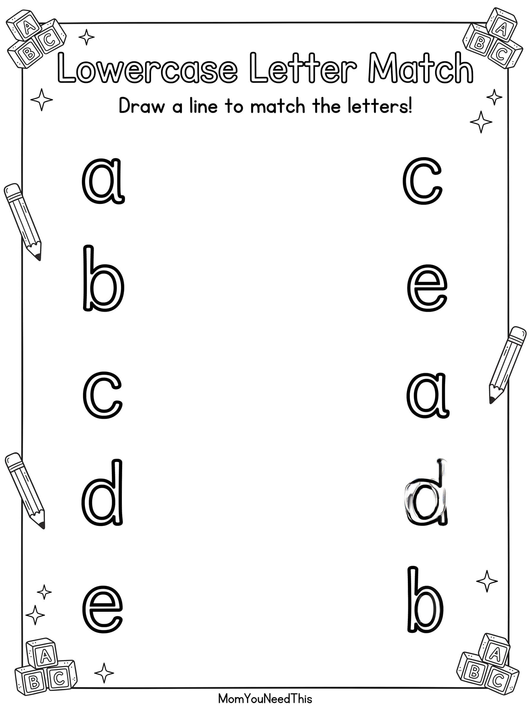

Printable Lowercase Letter Matching Worksheets Fun Alphabet Recognition Practice For Preschoolers
This free printable lowercase letter matching collection gives toddlers and preschoolers a fun, no-prep way to practise the letters they will actually read with. Books are written almost entirely in lowercase, so matching small letters — telling b from d, p from q, a from its printed double-story shape — is recognition practice in its most useful form. Print the worksheets and practice letters through play.
Quick Answer
Books are written in lowercase, so these lowercase letter matching pages practise the letters children will actually read. Six free worksheets cover the alphabet in sets, from a–e through v–z, including the famous flipped pairs like b and d, p and q. Made for toddlers and preschoolers — download, print, no signup.
At a Glance
- Ages: Toddlers and preschoolers
- Activity: Matching lowercase letters in sets, a–e and beyond
- Skills: Lowercase letter recognition and matching
- Format: Printable worksheets (PDF)
- Cost: Free, no signup
🔡 How To Use This Printable
- Download and print the worksheet pages.
- Look at each letter on the left side of the page.
- Play together first, showing your child how to find the pairs.
- Level it up by covering the right side and naming the letter your child needs to find before they draw each line.
⭐ Choose A Lowercase Letter Matching Worksheet
Practice identifying and matching lowercase letters while strengthening alphabet recognition, visual memory, and early reading readiness. Each worksheet below focuses on small letters — including the famous flipped pairs — so choose the letter your child is working on, or start with their name's letters.
Explore Lowercase Letter Matching Worksheets


Letters a–e
Practice matching lowercase letters a through e.
f–j
Letters f–j
Strengthen lowercase recognition with letters f through j.
k–o
Letters k–o
Continue building alphabet confidence with letters k through o.
p–t
Letters p–t
Practice lowercase alphabet recognition with letters p through t.
u–y
Letters u–y
Continue practicing lowercase letter recognition with letters u through y.
v–z
Letters v–z
Complete lowercase alphabet practice with letters v through z.
What Kids Learn
Lowercase matching builds the exact skill reading runs on: recognizing small letters fast and telling near-twins apart. The confusions that matter live here — b and d, p and q, n and u — and matching games give children the repetitions that settle them, along with the visual discrimination and memory that all early literacy stands on.
📚 Continue Building Alphabet Skills
Explore uppercase letter matching, letter tracing, beginning sounds, alphabet coloring pages, and more printable preschool activities.
🔤 Explore More Letter ActivitiesMore Free Learning Resources
Discover printable alphabet worksheets, tracing activities, coloring pages, learning games, and preschool resources designed to make learning fun.
🎁 View Free Learning Resources❓ Lowercase Letter Matching Pages FAQ
Is this lowercase letter matching pages printable really free?
Yes — these lowercase letter matching pages are 100% free to download and print at home. No signup and no payment needed. Just tap the download button and print as many copies as you like.
What ages is this printable best for?
It is made for toddlers and preschoolers. Little ones can enjoy it with a grown-up’s help, while older preschoolers can work on it more independently.
How do we play the matching game?
Print the worksheet, then draw a line from each letter on the left to the same letter on the right. Say each letter's name out loud as you find its match — and for the flipped pairs, check the shape's direction before drawing: in b the line comes before the bump, in d the bump comes first.
🔡 Why Lowercase Matching Is The Real Reading Practice
Matching lowercase letters is harder than matching capitals, and more valuable. Capitals are mostly distinct shapes; lowercase letters reuse the same few parts — a line, a bump, a curve — in different arrangements. b, d, p and q are one line and one circle in four orientations. A child matching lowercase letters is learning to read the arrangement, not just the parts.
That is the skill books demand. Storybooks are printed overwhelmingly in lowercase, and the words only hold still if b stays b and d stays d from one line to the next. Matching practice — find the same letter, draw the line, say its name — is how that stability gets built, one worksheet at a time.
Start with the letters in your child's name, then move to the flipped pairs when they are ready for a challenge. When the pairs stop causing trouble, your child has crossed one of the real thresholds on the way to reading.
🔗 More Free Printables You’ll Love
- 🔡 Free Uppercase Letter Matching PagesFree printable uppercase letter matching pages for little learners.
- 🔤 Free Lowercase Letter AFree printable lowercase letter a for little learners.
- 🎨 Free Alphabet Coloring PagesFree printable alphabet coloring pages for little learners.
- ✏️ Free Lowercase Letter TracingFree printable lowercase letter tracing for little learners.